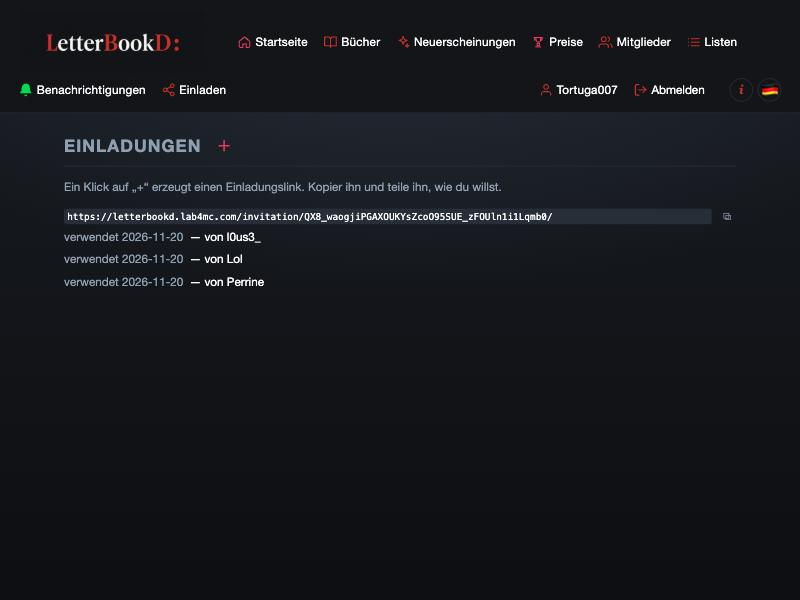

Einladungen
Wozu es dient: Ein neues Mitglied in einen deiner Clubs einladen, ohne ein Passwort weiterzugeben. Ein Klick auf „+“ erzeugt einen Link, den du in eine E-Mail, eine SMS oder eine private Nachricht einfügen kannst. Wer ihm folgt, legt sein Konto an und tritt dem Club bei.

Ablauf
Die Seite zeigt deine bestehenden Einladungslinks: eine URL pro Zeile, mit Status („ausstehend“ oder „verwendet am ... von ...“). Ein Klick auf „+“ erstellt einen neuen, einmaligen Einladungslink.
WICHTIG: Jeder neue Link macht den vorherigen, noch nicht verwendeten Link ungültig. Aus Sicherheitsgründen kann nur ein Link gleichzeitig aktiv sein. Kopiere den Link mit dem Kopier-Symbol und teile ihn, wie du möchtest.
Aktionsketten
Jede Zeile beschreibt einen Auslöser in der Oberfläche, das sich öffnende Modal/Formular und den erzielten Effekt.
| Auslöser | Modal / Felder | Effekt |
|---|---|---|
| Schaltfläche „+“ neben „Einladungen“ | POST-Formular ohne Parameter. | Erzeugt einen neuen, einmaligen Einladungslink (signierte URL). Der zuvor aktive Link wird deaktiviert. Der neue Link erscheint ganz oben in der Liste. |
| Kopier-Symbol neben einer Einladungs-URL | — | Kopiert die URL in die Zwischenablage. Anschließend kannst du sie im Programm deiner Wahl einfügen. |